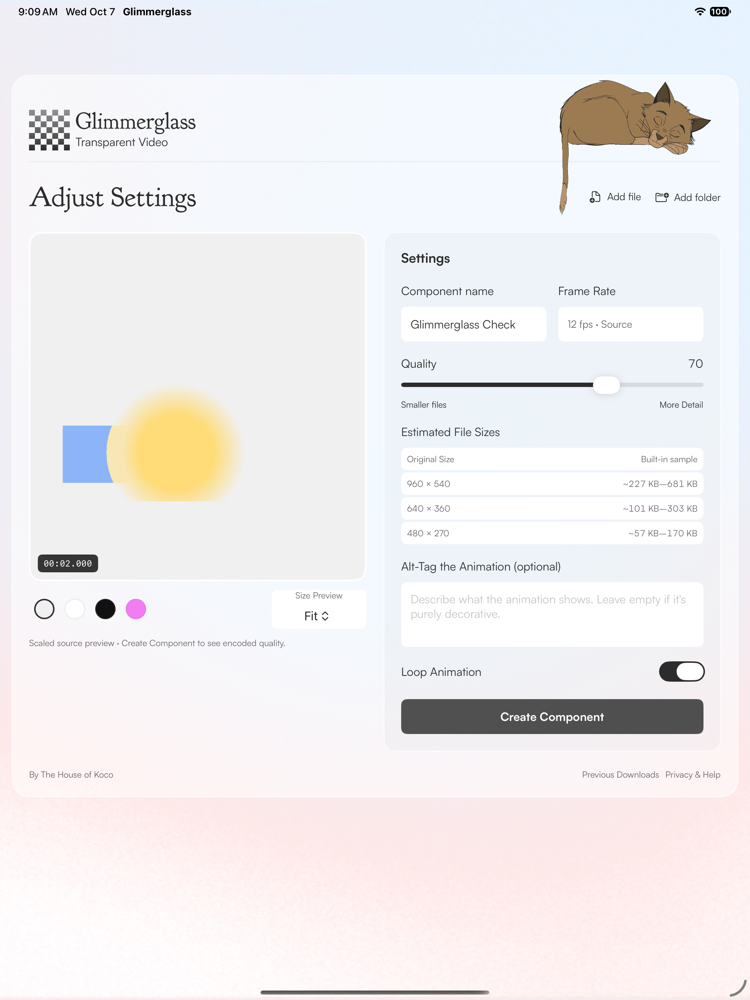

From your artwork to the web
Let your animation
out of the frame.
Start with your artwork. Glimmerglass turns transparent animations into a component with the player and video files already connected.
Add your artwork
Drop in an animation or a folder of PNG frames, with its transparency intact.
Find the right fit
Preview different sizes and backgrounds. Adjust quality and compare the estimated file size.
Create and place
Make your component, then bring it into your scene. The player and transparent videos come together.
Glimmerglass is in preparation for release. App Store and Framer Marketplace downloads are not yet available.
A little adjustment.
A lighter animation.
Keep your source artwork, choose the sizes you need and create when you’re ready. Use the guide for the app or plugin to make your first component.
Explore the Apple app
Start with transparency
Use transparent MOV, WebM, APNG or GIF files, or a sequence of PNG frames. Glimmerglass preserves the transparency in your artwork; it doesn’t remove an existing background.
File formats and limitsKeep what you create
Every completed export includes transparent videos, posters and a player. A created component keeps working independently of the conversion tool.
Using your downloadNeed a hand?
Tell us your device, input format and the error you see. Keep license keys and private artwork out of your first message.
mike@houseofkoco.com